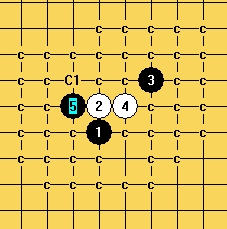

疏星一打除最强6外终结
首页
定式及研究
#1 疏星一打除最强6外终结 作者：逆刃 发表时间：2009-4-4 13:36:24
都是没人下的棋，属于垃圾谱，喜欢的就下，看了就知道，废话不多说。

 疏星一打除最强6终结谱.rar
疏星一打除最强6终结谱.rar ［ 梅边笛 于 2010-5-12 15:08:00 时花20金币送鲜花一朵］
［ 华夏小宝同学于 2013-7-21 20:46:31 时花20金币送鲜花一朵］
［ 华夏小宝同学于 2013-7-21 20:46:31 时花20金币送鲜花一朵］
［ 华夏小宝同学于 2013-7-21 20:46:31 时花20金币送鲜花一朵］
［ 华夏小宝同学于 2013-7-21 20:46:31 时花20金币送鲜花一朵］
［ 华夏小宝同学于 2013-7-21 20:46:31 时花20金币送鲜花一朵］
［ 华夏小宝同学于 2013-7-21 20:46:31 时花20金币送鲜花一朵］
［ 华夏小宝同学于 2013-7-21 20:46:31 时花20金币送鲜花一朵］
［ 华夏小宝同学于 2013-7-21 20:46:31 时花20金币送鲜花一朵］
［ 华夏小宝同学于 2013-7-21 20:46:31 时花20金币送鲜花一朵］
［ 华夏小宝同学于 2013-7-21 20:46:31 时花20金币送鲜花一朵］
［ 华夏小宝同学于 2013-7-21 20:46:31 时花20金币送鲜花一朵］
［ 华夏小宝同学于 2013-7-21 20:46:31 时花20金币送鲜花一朵］
［ 华夏小宝同学于 2013-7-21 20:46:31 时花20金币送鲜花一朵］
［ 华夏小宝同学于 2013-7-21 20:46:31 时花20金币送鲜花一朵］
［ 华夏小宝同学于 2013-7-21 20:46:31 时花20金币送鲜花一朵］
［ 华夏小宝同学于 2013-7-21 20:46:31 时花20金币送鲜花一朵］
［ 华夏小宝同学于 2013-7-21 20:46:31 时花20金币送鲜花一朵］
［ 华夏小宝同学于 2013-7-21 20:46:31 时花20金币送鲜花一朵］
［ 华夏小宝同学于 2013-7-21 20:46:31 时花20金币送鲜花一朵］
［ 华夏小宝同学于 2013-7-21 20:46:31 时花20金币送鲜花一朵］
#2 Re:疏星一打除最强6外终结 作者：砍 发表时间：2009-4-4 15:03:10
这个有了，还有没有其他的好谱啊
#3 Re:疏星一打除最强6外终结 作者：行云流水 发表时间：2009-4-4 21:22:25
我看也不错，逐渐终结。
#4 Re:疏星一打除最强6外终结 作者：启蒙 发表时间：2009-4-5 1:19:18
哈哈。很个性的谱。谢谢逆刃LS
#5 Re:疏星一打除最强6外终结 作者：茗弈如梦 发表时间：2009-4-10 12:28:51
 逆刃老师的贴很值得学习
逆刃老师的贴很值得学习
#6 Re:疏星一打除最强6外终结 作者：就是爱玩 发表时间：2009-4-10 15:03:40
学习了。
#7 Re:疏星一打除最强6外终结 作者：刀魂 发表时间：2009-4-12 18:50:57
有点 相识于 斜月 最强6.。。
#8 Re:疏星一打除最强6外终结 作者：屏蔽 发表时间：2009-4-12 19:05:46
=======上图对应的爱五子棋谱代码如下，以便你拆解：========
h8h9j10i9g9g8i11
======================================================
=======上图对应的爱五子棋谱代码如下，以便你拆解：========
h8h9g9g8i10i9j10
======================================================只能说辛苦逆刃发了个新的黑7……
［ 失落刀 于 2009-4-12 21:45:20 时奖励此帖[金币加 20 威望加1］
#9 Re:疏星一打除最强6外终结 作者：失落刀 发表时间：2009-4-12 21:36:31
8楼这么一说，勾起了我的痛苦回忆。
=======上图对应的爱五子棋谱代码如下，以便你拆解：========
h8i9k7g9h9h10i11g11
======================================================我也研究了一个新8.
=======上图对应的爱五子棋谱代码如下，以便你拆解：========
h8i9k7g9h9h10i11f10
======================================================
#10 Re:疏星一打除最强6外终结 作者：逆刃 发表时间：2009-4-12 21:57:46
花花的这个8也是被我伤的心吧。。
#11 Re:疏星一打除最强6外终结 作者：失落刀 发表时间：2009-4-12 22:05:34
我当时借用流星8的理念来进行了一番痛苦的研究，研究出了这个8胜，还没来得及沾沾自喜，结果逆刃说，活三白就胜了呀。
#12 Re:疏星一打除最强6外终结 作者：起航 发表时间：2009-8-17 1:08:48
呵呵，下回去看看啦。
#13 Re:疏星一打除最强6外终结 作者：九翼猫心 发表时间：2010-5-12 13:30:45
就算没人下也能学到东西，棋理自在棋中，谢谢老师的谱
#14 Re:疏星一打除最强6外终结 作者：华夏小宝 发表时间：2013-7-21 20:45:12
谢谢了 终于找到了 我得好好看看这个败6 看看是怎么败掉的 哈哈
#15 Re:疏星一打除最强6外终结 作者：飞翼之灵 发表时间：2013-7-29 9:23:05
学习。。。。。。。。。。